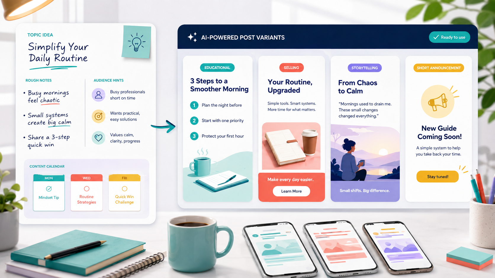

Промтзилла
Пост получается лучше, когда ИИ знает аудиторию, цель и площадку. Один и тот же текст для Telegram, VK и короткого Reels-подписания работает по-разному.

Пошаговая инструкция
- 1Опиши тему и аудиторию.
- 2Укажи площадку и цель: вовлечение, продажа, экспертность, анонс.
- 3Попроси 5 вариантов хука.
- 4Собери структуру: начало, польза, пример, вывод, CTA.
- 5Попроси сделать несколько версий разной длины.
Какой результат просить
Нужен не один текст, а набор вариантов: экспертный, продающий, сторителлинг и короткий анонс. Для такой задачи можно открыть Study24 AI, дать вводные и попросить несколько вариантов под разные цели.
Промт
RU
Напиши пост для соцсетей. Тема: [тема] Аудитория: [кто читает] Площадка: [Telegram / VK / Instagram / другое] Цель поста: [вовлечение / продажа / экспертность / анонс] Тон: [спокойный / дерзкий / экспертный / дружелюбный] Сделай: — 5 вариантов хука; — основной пост; — короткую версию; — CTA; — 5 вариантов заголовка; — идеи для картинки или карусели. Пиши живо, без воды, клише и слишком рекламного тона.
EN
Write a social media post. Topic: [topic] Audience: [readers] Platform: [Telegram / VK / Instagram / other] Goal: [engagement / sales / expertise / announcement] Tone: [calm / bold / expert / friendly] Create: — 5 hook options; — main post; — short version; — call to action; — 5 headline options; — ideas for an image or carousel. Write naturally, with no fluff, clichés, or overly promotional tone.
Важно
После генерации проверь факты и убери универсальные фразы: они делают пост похожим на массу других ИИ-текстов.
Теги